Habbi 2.0 UFSM • Desenho Industrial
Prancha Visual do Design System & Identidade Autoral — Laboratório de Interfaces (2026)
O Habbi rompe com abordagens punitivas e estressantes de cessação comportamental. A personagem Morgana — inspirada na gatinha preta real da autora — atua como a âncora afetiva da interface (*Cozy Interface*), celebrando conquistas diárias e acolhendo recaídas com empatia, calor humano e sem julgamentos.
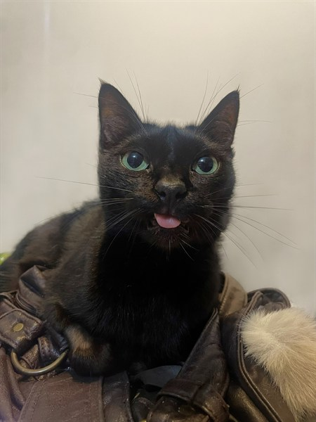
Do Vínculo Real ao Universo Digital
"A identidade visual e os personagens foram desenvolvidos especialmente para o projeto de Laboratório de Interfaces (Desenho Industrial/UFSM), tendo como principal inspiração a Morgana, minha gatinha, que deu origem ao mascote presente em todas as telas."
Características Semióticas: Traços 2D orgânicos e limpos, olhos verdes amendoados e expressivos, proporções afetuosas (*chibi*), e remoção dinâmica de fundo branco em tempo de execução via Canvas 2D sem filtros destrutivos.


O Habbi adota uma paleta flat de cores puras e saturadas, associadas diretamente a funções emocionais e operacionais no aplicativo. Todos os tons foram calibrados para garantir contraste superior a 4.5:1 (normal) e 3.0:1 (elementos gráficos e grandes).
A tipografia arredondada humanista expressa proximidade e gentileza. A escala organiza a atenção do usuário de forma clara, desde números gigantes de conquista até micro-legendas funcionais.
Componentes táteis nativos do Habbi. Apresentam cantos generosamente arredondados (`border-radius: 14px a 28px`), superfícies sólidas limpas e micro-interação física (`transform: scale(0.97)` ao clique).
Amarelo (Padrão)
Verde (Conquista)
Rosa (Afeto)
Azul (Foco/Calma)
Laranja (SOS)
Evidência visual da auditoria de contraste tela a tela. O Habbi mantém superfícies coordenadas e opacas nos dois modos, assegurando hierarquia visual, nitidez perfeita dos mascotes e preservação rigorosa da identidade sem uso de vidros difusos ou filtros artificiais.
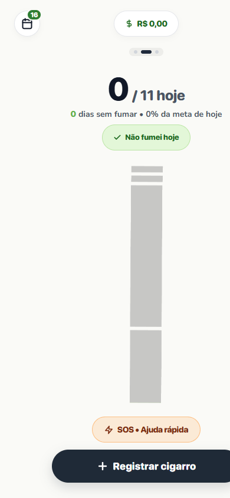
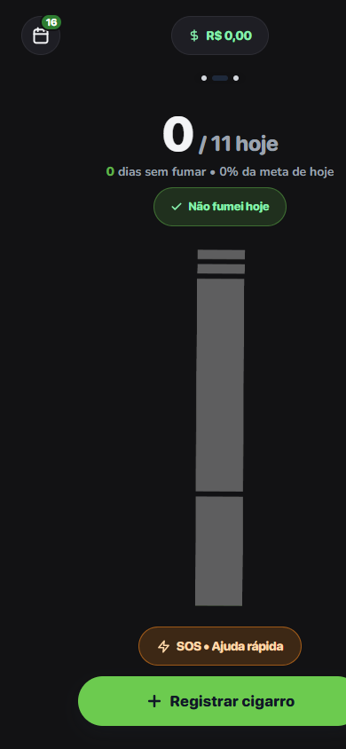
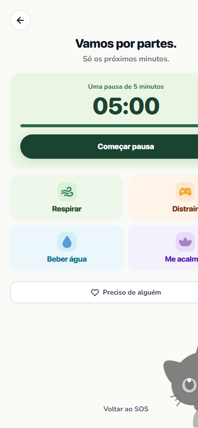
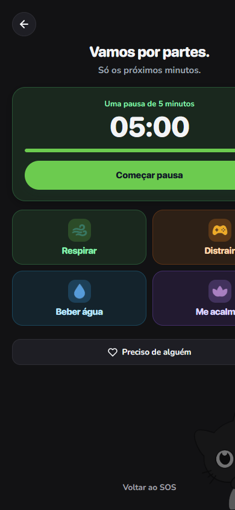
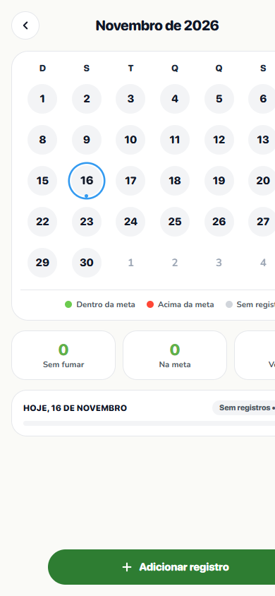
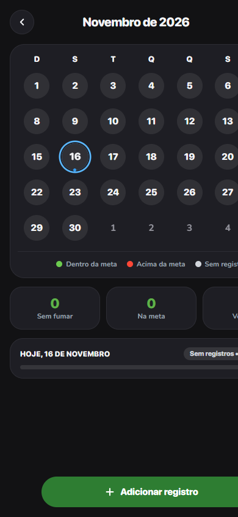
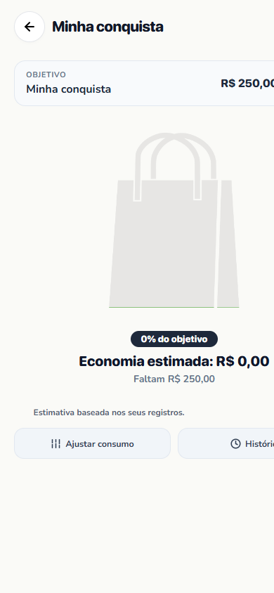
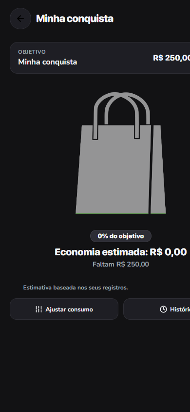
O perfil do usuário é personificado pela gatinha Morgana, permitindo a escolha entre 6 cores de fundo cromáticas e 6 acessórios afetivos autorais (Cachecol, Flor, Folha, Fone de Ouvido, Laço e Óculos).
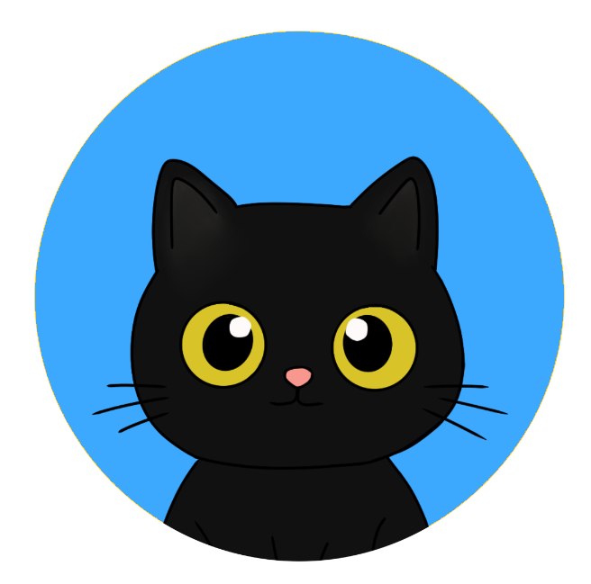
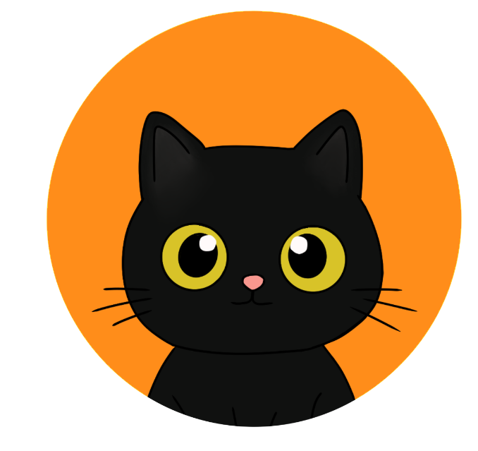
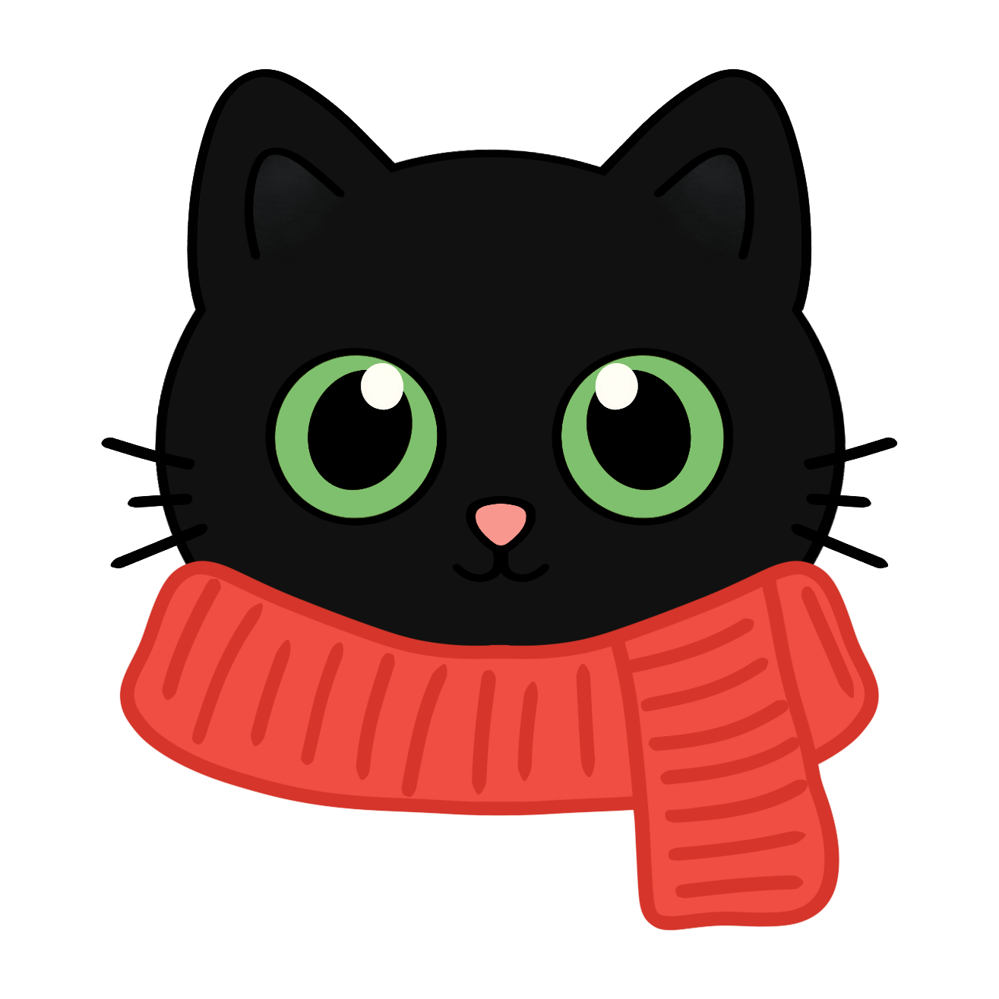
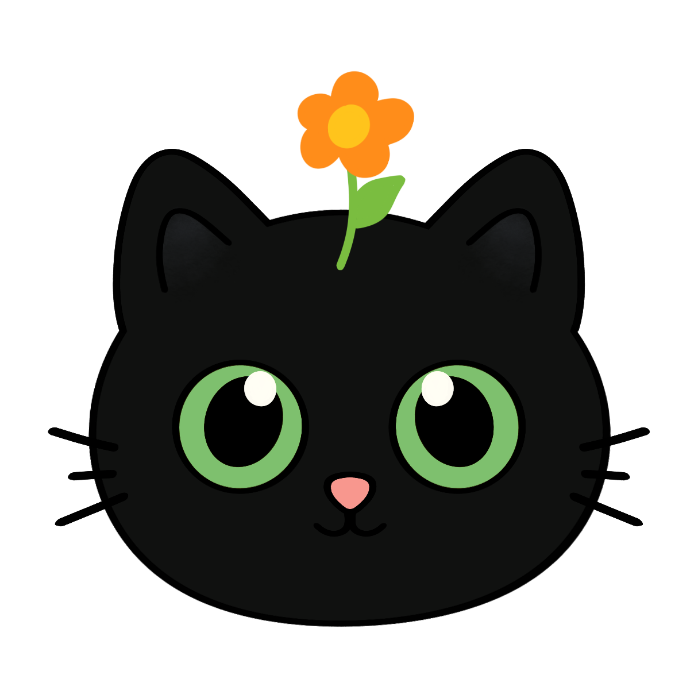
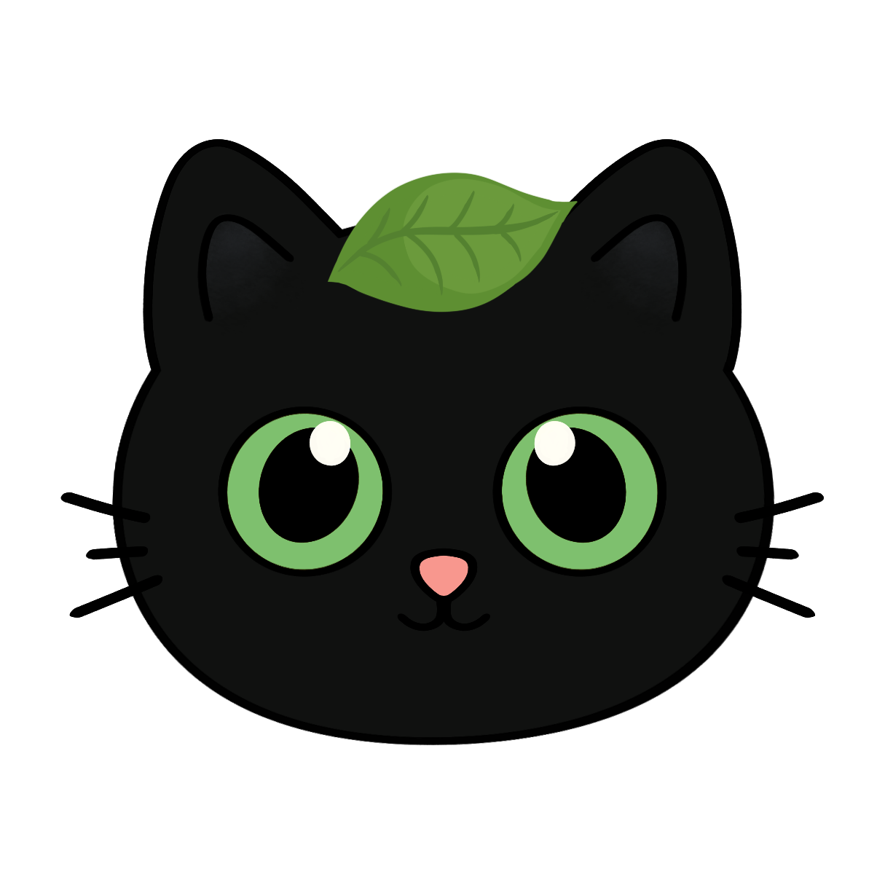
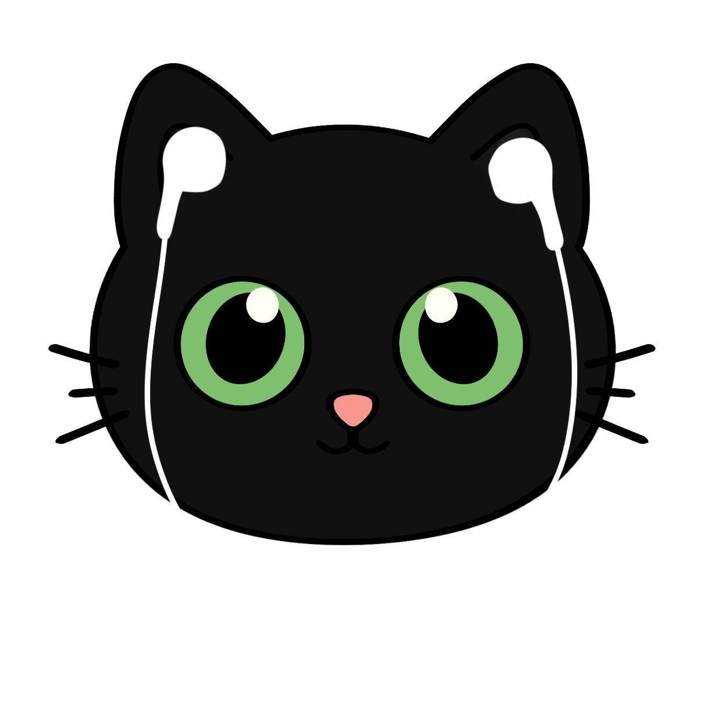